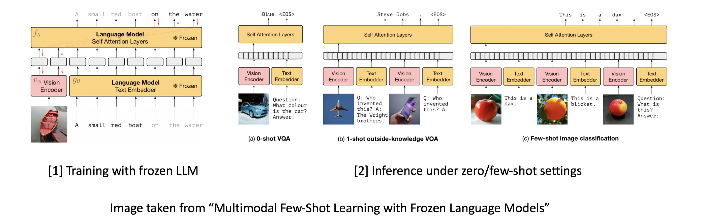

Demo for our "Representation Codebook for Multi-Modal Alignment" (CODIS) paper
Demo for text-to-image generation enabled by multi-modal representation learning.
Vision Language Pretraining (VLP) holds similar promise as language models such that when pretrained, will perform strongly over a variety of downstream multi-modal tasks, such as cross-modal retrieval, visual reasoning, VQA and text-to-image generation. The below two demos showcase two of these capabilities. On the left, the VLP model shows strong ability in correlating the image and text modalities even though it's not trained on the retrieval databases directly. On the right, a text-to-image model is built using the alignment between the image and text embedders, similar to the idea in DALLE2.
In 2021, OPENAI proposed an elegant yet effective CLIP model that connects image and text modalities by training on 400M image-text pairs. The model shows strong zero-shot ability on ImageNet classification tasks without finetuning on the original 1.28M labeled samples. The main idea is to optimize the image and text embedding networks so that the image and text representations corresponding to the same instance will share greater similarity. A simple code snippet showing this idea is shown below.
# predictions from the network
logits = (text_embeddings @ image_embeddings.T) / self.temperature
images_similarity = image_embeddings @ image_embeddings.T
texts_similarity = text_embeddings @ text_embeddings.T
# optimization targets
targets = F.softmax(
(images_similarity + texts_similarity) / 2 * self.temperature, dim=-1
)
texts_loss = cross_entropy(logits, targets)
images_loss = cross_entropy(logits.T, targets.T)
loss = (images_loss + texts_loss) / 2.0
Since then, the community has seen a plethora of works surrounding vision-language pretraining/alignment, and a wider applications including open-vocabulary object detection (ViLD, Detic etc), cross-modal retrieval, VQA, Visual Entailment, Referring Expression Comprehension etc. Some categorizations of works include an image branch with or without region features; or multi-modaldal fusion in the early or late stages (refer to ViLT).
Prior works that perform Vision Language Pretraining (VLP) usually require prohibited amount of data and careful image-text filtering to perform well. Examples include CLIP (400M pairs) and ALIGN (1.8b pairs). The paper shows strong performance using only 15M pairs. The key observation is to address the alignment issue between the image and text modality. For example, prior works that use pretrained region features (e.g., OSCAR with object-centric visual features) cannot be optimized end-to-end. It's also hard to fuse the image and text information before aligning the feature represenations first. To address this, the author proposed two main contributions.
In the above diagram, the image encoder is a 12-layer transformer architecture whereas the text encoder and the multi-modal fusion encoder evenly splits a 12 layer transformer. My take for this in-symmetry is to take advantage of the pretrained weights for initializing the two modules. The cls token from the image and text embedder will be used to construct the image-text contrastive loss (ITC), while the cls token from the multi-modal encoder will be used for image-text matching loss (ITM). The typical masked language modeling loss (MLM) is also incorporated for modeling. During training, there's a "momentum copy" of the image and text embeddings (separately stored in a image/text queue), which is momentum updated and "distilled" into the running image/text embedders.
This is a work done during my work at Amazon. The main motivation is to model image and text alignment and interaction at both the instance and cluster level, inspired by the success of ALBEF and SwAV. The paper was published in CVPR 2022. There are two main contribution.
Compared to prior works, we utilize both instance level assignment losses and cluster level assignment losses for multi-modal alignment. To achieve this, a learnable multi-modal codebook which represents a joint image-text embedding space is optimized, to guide the image-to-cluster and text-to-cluster assignment. We also interpreted the contrastive alignment stage from a teacher-student perspective, resulting in the following four losses.
Language models have shown great potentials when coupled with scaling. One such representative is GPT-3, whose breakthroughs on performance large depend on its scale, in both model and data sizes. These large language models (a.k.a LLM) culminated in the birth of ChatGPT (GPT-3.5) in 2022, showing emergent capabilities in instruction following, context reasoning, code generation, translation and summarization. Ever since then, researchers have been working to develop multi-modal LLM, which eventually led to GPT4 that was released in March this year. Alongside GPT4, there's a growing trend of research that incorporates LLM into vision-language pretraining.
DeepMind proposes a "dynamic prefix-tuning" approach to using frozen LLM for vision-language pretraining (there is a good intro about the difference between prompt tuning and prefix tuning here). In contrast to prefix-tuning which inserts and trains a static soft-prompt into the LLM, the prefix is dynamic and input-conditional with the use of an additional neural network. The paper also shows the model's capability in handling "interleaved" image-text inputs and few-shots in-context learning abilities.
Specifically, the pretrained auto-regressive LLM is parameterized with a transformer network $f_\theta(t_1, t_2, ... t_l)$ and an embedding network $t_l = g_\theta(y_l)$, that optimizes the next-token prediction objective $\sum_l log p_\theta (y_l|y_1, y_2, ...y_{l-1})$. The model learns a visual encoder $v_\phi$ and linear mapping that transforms an image into a sequence of continuous embeddings as visual prefix to LLM. In the paper, the visual prefix is of dimension $D*k$, where $D$ is the same as token embeddings, and $k$ is the number of visual prefix tokens, a hyper-parameter set to $2$. To enable interleaved tokens, the paper adopted a relative position embedding.
The main motivation is to decompose cross-modal alignment training into two stages, in contrast to Flamingo and Frozen, which directly optimizes the image-to-text generation loss. Instead, BLIP-2 adopts a representaion learning stage and a generative learning stage separately, as shown in the image below.
From a pratical perspective, Q-former can be seen as a multi-modal conversion network that bridges the gap between image representation and token embeddings digested by the frozen LLM.
Vision-Language Pretraining is an emerging topic attracting growing interests from both the academia and industry. This blog has only scratched the surface of the many exciting works in this domain. Follow up will show more interesting works in the era of GPT4!